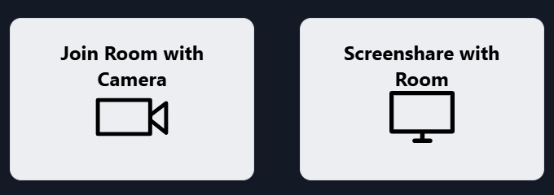
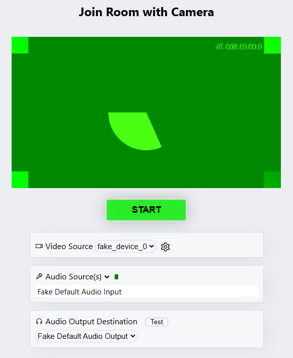

Join the conversation.
See the show.
Use the room link your host sends you. Headphones help keep everyone’s audio clear.
1Open your invitation
Open the host’s link in your browser. Choose Join Room with Camera.
If the link opens inside a messaging app, use its menu to open it in your browser.


2Choose your devices
Allow camera and microphone access. Select your camera and mic, then click START.
Use headphones. Keep the room tab open.


3Confirm picture and sound
The large picture is the host’s OBS program. Your own camera appears in a small preview. You can still hear the other guests.
Tell the host: “I see the program, hear the clip, and hear no echo.”
No sound? Tap the page or its play prompt, then check your output volume. Echo? Tell the host so they can check return audio routing. If the program disappears, keep talking and tell the host before reloading.